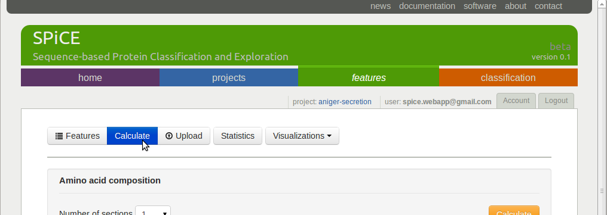

SPiCE features¶
After project initiation, you can use the Calculate button under the Features tab to calculate a range of sequence-based protein features.
The following sections describe the different feature categories that can be calculated on the SPiCE website. Some of these features were used in our previous research [16] [17], and the rest was extracted from other feature calculation methods [4] [13], [6], [1].
Amino acid composition¶
The amino acids composition calculates the relative frequency of occurrence for each of the 20 amino acids in a protein sequence.

Having 20 amino acids, this will result in 20 features. Any other than the 20 unambiguous amino acid letters will be ignored.
To illustrate this, consider the following (unrealistic) protein sequence, which contains two occurrences of each amino acid in which each amino acid obtains the value 0.05:
>>aac_test
MMAARRNNDDCCEEQQGGHHIILLKKFFPPSSTTWWYYVV
will result in the following feature vector:
. A1 R1 ... V1
aac_test 0.05 0.05 ... 0.05
As a parameter, users can specify in how many (equal sized) segments a protein should be divided, before calculating the amino acid composition of each segment separately. The number of features will therefore be the number of segments times 20.
With 2 as number of segments parameter, the sequence will be split in two:
segment 1 segment2
MMAARRNNDDCCEEQQGGHH | IILLKKFFPPSSTTWWYYVV
The amino acid composition of both segments is calculated which together results in a feature vector with 40 features:
. A1 ... V1 ... A2 ... V2
aac_test 0.10 ... 0.00 ... 0.00 ... 0.10
Dipeptide composition¶
Similar to the amino acid composition, the dipeptide composition calculates the relative frequency of occurrence of each of the 400 possible dipeptides in a protein sequence.
Having 400 possible amino acid pairs (dipeptides), this will result in 400 features. Dipeptides containing any other than the 20 unambiguous amino acid letters will be ignored.
As a parameter, users can specify in how many (equal sized) segments a protein should be divided, before calculating the dipeptide composition of each segment separately. To limit the number of features and to avoid too sparse feature matrices, the maximal number of segments is set to 2.
For an example sequence that contains 10 dipeptides:
>>dc_test
MAAARRNNDDC
The resulting feature vector will be:
. AA AR ... AV RA RR VV
dc_test 0.20 0.10 ... 0.00 0.00 0.10 ... 0.00
Terminal end amino acid count¶
This feature category returns the amino acid counts of a fixed length sequence, either at the N- or the C-terminal end of the protein sequence.

For example sequence:
>>teraac_test
MMAARRNNDDCCEEQQGGHHIILLKKFFPPSSTTWWYYVV
the amino acid counts of the length 10 C-terminal end result in the following feature vector:
. A R N D C E Q G H ... M ... V
teraac_test 2 2 2 2 0 0 0 0 0 ... 2 ... 0
in which the counts for M, A, R, N, and D are set to 2, while the remaining 15 features are set to 0.
Sequence length¶
This category calculates only one feature, the length of the amino acid sequence.

The example sequence:
>>>len_test
MMAARRNNDD
Will result in the following feature vector:
. len
len_test 10
Property Composition / Transition / Distribution (CTD)¶
The Composition, Transition, Distribution feature is introduced in [5], the implementation is based on the description in [4].
For these features, the protein sequence is first translated from the 20 letter amino acid alphabet to a 3 letter alphabet, in which the 20 amino acids are divided over the three letters based on some property. The properties and corresponding subdivision of the amino acids are:
property letter A letter B letter C
---------------------------------------------------------------------------
hydrophobicity RKEDQN GASTPHY CLVIMFW
normalized v.d. Waal GACSTPD NVEQIL MHKFRYW
polarity LIFWCMVY PATGS HQRKNED
polarizability GASDT CPNVEQIL KMHFRYW
charge KR ANCQGHILMFPSTWYV DE
secondary structure EALMQKRH VIYCWFT GNPSD
solvent accessibility ALFCGIVW PKQEND MRSTHY
To illustrate this, using charge as property, an amino acid sequence will be mapped to a three letter charge alphabet as follows:
MPMDQSISSPLFPMEKDIDIPLDATPLAQSSSLQLFIHLAEPVVFLQGFDPQKTEYPSVVLRGCLVVRIL
| |:| | | | | : | : :
BBBCBBBBBBBBBBCACBCBBBCBBBBBBBBBBBBBBBBBCBBBBBBBBCBBABCBBBBBBABBBBBABB
For the mapped sequence, three types of features are calculated. First the property letter composition:
composition A: 4 / 70 = 0.057
composition B: 58 / 70 = 0.114
composition C: 8 / 70 = 0.829
Secondly the relative frequency of occurrence of letter transitions. For letters A and B this is the number of transitions from A to B and from B to A divided by the sequence length - 1:
transition A-B B-A: 6 / 69 = 0.087
transition A-C C-A: 2 / 69 = 0.029
transition B-C C-B: 14 / 69 = 0.203
Finally the property letter distribution is captured by 5 features per property letter. If we consider letter C, the first feature is the (procentual) sequence position of the first occurrence of the C:
distribution C first: 4 / 70 = 0.057
The following 4 features are the (procentual) sequence positions where respectively 25%, 50%, 75%, and 100% of the letters C is on and before this position:
distribution C 25%: 15/70 = 0.214
distribution C 50%: 19/70 = 0.271
distribution C 75%: 41/70 = 0.586
distribution C 100%: 55/70 = 0.786
The same five features are calculated for letters A and B as well. In total the CTD feature category provides 3 + 3 + 5 x 3 = 21 features for a given property.
Autocorrelation¶
The autocorrelation captures correlations between residue properties at a given distance over the whole sequence.
Based on the user-defined amino acid scale (see Feature data sources), a protein sequence is first translated to a property profile. Than, for a given distance between two residues (the lag parameter), the method traverses over the protein sequence, calculating a correlation measure for all residue pairs at distance lag. Three different autocorrelation calculation types are offered (the type parameter), all using a different correlation measure: normalized Moreau-Broto [12], Moran [11], and Geary [6].
The implementation is based on the description is [4], more information about the implementation details can be found there.
Signal average¶
This feature translates a protein sequence into a property profile using a user-defined amino acid scale (see Feature data sources), and calculates the average profile (signal) value as feature.
The window and edge parameter determine how much the profile is smoothed before calculating the feature. A larger window results in more a more smoothed profile. The edge determine how much influence the residues at the edge of the window have on the smoothing (see also Fig.1B in Feature data sources).

Amino acid scales relate to different amino acid properties, such as hydropathicity. The average value of such a scale therefore provides an indication of the global hydropathicity of the protein.
Signal peaks area¶
The same as the previous feature, but instead of taking the average profile value, this feature calculates the area under the profile curve under and above some given threshold (see also Fig.1C in Feature data sources).

Pseudo amino acid composition type 1¶
The type 1 pseudo amino acid composition calculates 20 + lambda features as introduced in [2] and provides the same calculation as provided on the PseAAC webserver [6]. The same amino acid scales as on the PseAAC webserver are also provided, of which one or more can be selected.

Pseudo amino acid composition type 2¶
The type 2 pseudo amino acid composition calculates 20 + lambda features as introduced in [3] and provides the same calculation as provided on the PseAAC webserver [6]. The same amino acid scales as on the PseAAC webserver are also provided, of which one or more can be selected.


{kind=link}
{kind=link}
Secondary structure composition¶
Secondary structure sequences may contain three letters, the same that are used by secondary structure prediction method PSIPRED: C (random coil), H (helix), E (strand). This feature calculates the composition of these three letters.

Per secondary structure amino acid composition¶
This feature category calculates the amino acid composition per secondary structure element.
{kind=link}
For example, for the following amino acid and corresponding secondary structure sequence:
protein: A A A A A A F F F F F F D D D D D D
| | . . . . . . * * * * . . | | | |
sec. struct: C C H H H H H H E E E E H H C C C C
The sequences will be split per secondary structure type, gathering all residues that are annotated with the same secondary structure letter:
C (random coil): A A D D D D
H (helix): A A A A F F D D
E (strand): F F F F
The composition of these three subsequence is than calculated and returned as features:
. | coil | helix | strand |
CA CD CF HA HD HF EA ED EF
0.33 0.66 0.00 0.50 0.25 0.25 0.00 0.00 1.00
This example only shows the composition of three amino acids (A,F,D), resulting in 3 x 3 = 9 features. When using all amino acids, 3 x 20 = 60 features are returned.
Solvent accessibility composition¶
Solvent accessibility sequences may contain two letters: B (buried), E (exposed). This feature calculates the composition of these two letters.
{kind=link}
Per solvent accessibility class amino acid composition¶
This feature category calculates the amino acid composition per solvent accessibility class (buried/exposed).

For example, for the following amino acid and corresponding solvent accessibility sequence:
protein: A A A A A A F F F F F F D D D D D D
. . . . | | | | . . | | | | . . . .
solvaccess: E E E E B B B B E E B B B B E E E E
The sequences will be split in a list with buried and a list with exposed amino acids:
E: A A A A F F D D D D
B: A A F F F F D D
The composition of these two subsequence is than calculated and returned as features:
. | exposed | buried |
EA ED EF BA BD BF
0.40 0.40 0.20 0.25 0.25 0.50
This example only shows the composition of three amino acids (A,F,D), resulting in 2 x 3 = 6 features. When using all amino acids, 2 x 20 = 40 features are returned.
Codon composition¶
This feature category calculates the relative frequency of occurrence of each of the 64 codons in a protein’s ORF sequence.
{kind=link}
Codon usage¶
This feature category calculates the relative usage for each codon per amino acid in the protein sequence.
{kind=link}
To illustrate this, consider the following protein amino acid sequence, consisting of only alanines, and the corresponding ORF sequence:
amino acid: A A A A A A A A A A
ORF: GCC GCC GCC GCC GCC GCA GCA GCA GCT GCT
Since four different codons encode for alanine: GCT, GCC, GCA, and GCG, the example ORF sequence can only consist of these 4 codons. The codon usage feature calculates the relative frequency of occurrence of these four codons, resulting in the following 4 feature values:
. GCT GCC GCA GCG
0.2 0.5 0.3 0.0
All other codon values will be set to 0.0 in this example. In a real sequence, containing all 20 amino acids, this procedure is done for each amino acid, resulting in a total of 64 features, one per codon.
References¶
| [1] | D.S. Cao, Q.S. Xu, and Y.Z. Liang. Propy: a tool to generate various modes of chou’s PseAAC. Bioinformatics, 29(7):960–962, 2013. |
| [2] | K.C. Chou. Prediction of protein cellular attributes using pseudo-amino acid composition. Proteins: Structure, Function, and Bioinformatics, 43(3):246–255, 2001. |
| [3] | K.C. Chou. Using amphiphilic pseudo amino acid composition to predict enzyme subfamily classes. Bioinformatics, 21(1):10–19, 2005. |
| [4] | Kuo-Chen Chou. Prediction of protein subcellular locations by incorporating quasi-sequence-order effect. Biochemical and Biophysical Research Communications, 278(2):477–483, 2000. |
| [5] | I. Dubchak, I. Muchnik, S.R. Holbrook, and S.H. Kim. Prediction of protein folding class using global description of amino acid sequence. Proceedings of the National Academy of Sciences, 92(19):8700–8704, 1995. |
| [6] | R.C. Geary. The contiguity ratio and statistical mapping. The Incorporated Statistician, 5(3):115–146, 1954. |
| [1] | A.G. Georgiev. Interpretable numerical descriptors of amino acid space. Journal of Computational Biology, 16(5):703–723, 2009. |
| [2] | S. Kawashima, P. Pokarowski, M. Pokarowska, A. Kolinski, T. Katayama, and M. Kanehisa. AAindex: amino acid index database, progress report 2008. Nucleic Acids Research, 36(suppl 1):D202–D205, 2008. |
| [3] | J. Kyte and Russell F Doolittle. A simple method for displaying the hydropathic character of a protein. Journal of Molecular Biology, 157(1):105–132, 1982. |
| [4] | (1, 2, 3) Ze-Rong Li, Hong Huang Lin, LY Han, L Jiang, X Chen, and Yu Zong Chen. PROFEAT: a web server for computing structural and physicochemical features of proteins and peptides from amino acid sequence. Nucleic Acids Research, 34(suppl 2):W32–W37, 2006. |
| [11] | P.A.P. Moran. Notes on continuous stochastic phenomena. Biometrika, 37(1/2):17–23, 1950. |
| [12] | G. Moreau and P Broto. Autocorrelation of molecular structures, application to SAR studies. Nouveau Journal de Chimie, 4:757–764, 1980. |
| [13] | H.B. Rao, F. Zhu, G.B. Yang, Z.R. Li, and Y.Z. Chen. Update of PROFEAT: a web server for computing structural and physicochemical features of proteins and peptides from amino acid sequence. Nucleic Acids Research, 39(suppl 2):W385–W390, 2011. |
| [5] | G. Schneider and P. Wrede. The rational design of amino acid sequences by artificial neural networks and simulated molecular evolution: de novo design of an idealized leader peptidase cleavage site. Biophysical Journal, 66(2):335–344, 1994. |
| [6] | (1, 2, 3) H.B. Shen and K.C. Chou. PseAAC: a flexible web server for generating various kinds of protein pseudo amino acid composition. Analytical Biochemistry, 373(2):386–388, 2008. |
| [16] | B. A. van den Berg, J. F. Nijkamp, M. J. T. Reinders, L. Wu, H. J. Pel, J. A. Roubos, and D. De Ridder. Sequence-based prediction of protein secretion success in \textit Aspergillus niger. In Proceedings of Pattern Recegnition in Bioinformatics 2010, 3–14. Springer, 2010. |
| [17] | B.A. van den Berg, M.J.T. Reinders, M. Hulsman, L. Wu, H.J. Pel, J.A. Roubos, and D. de Ridder. Exploring sequence characteristics related to high-level production of secreted proteins in \textit Aspergillus niger. PLoS ONE, 7(10):e45869, 2012. |